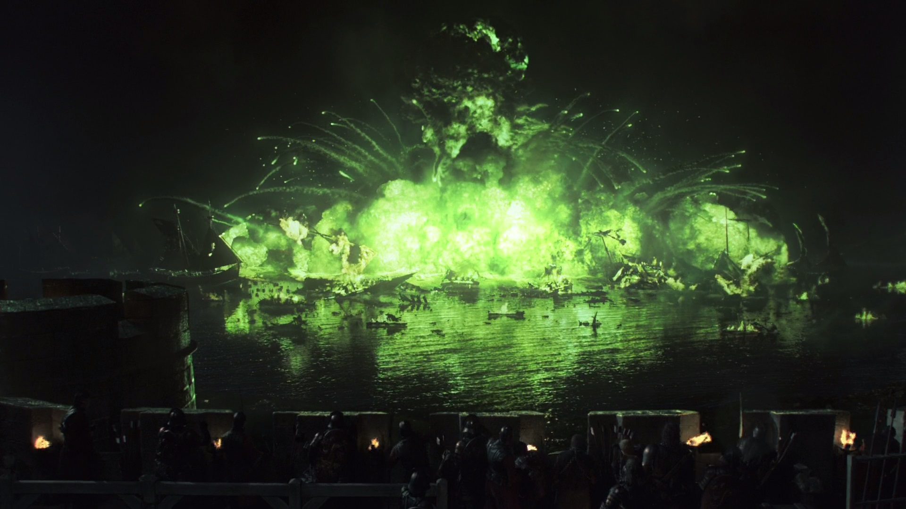

NEWS

Game of Thrones prequel is confirmed
Set 300 years before the events of Game of Thrones, the series tells the story of a turbulent period for House Targaryen, one that set sibling against sibling and dragon against dragon.

Game of Thrones producers begged HBO bosses to film iconic battle scene
The Game of Thrones producers have revealed they had to plead with the bosses at HBO to let them film the Battle of Blackwater.

Game of Thrones star Kit Harington reveals why Jon Snow wouldn’t have made a good king
Game of Thrones actor Kit Harington has revealed why Jon Snow wouldn’t have made a good king if he won the Iron Throne at the end of the series.